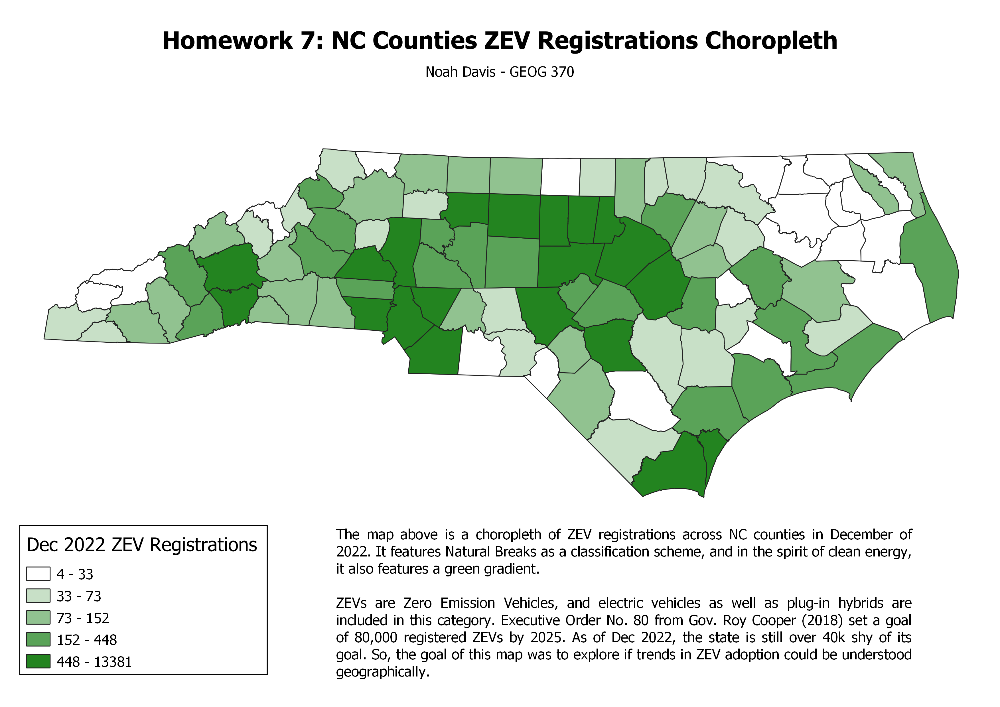

Home
Homework 1
Homework 2
Homework 3
Homework 4
Homework 5
Test 1
Homework 6
Homework 6.2
Homework 7
Homework 7
My Map

Interactive Version:
Data used for this project
NC Counties Vector Layer
Source of NC Counties Vector Layer
Cleaned, 12/22 NC VEZ Registration Data
Source of NC ZEV Data (Dec 2022 Data Used)